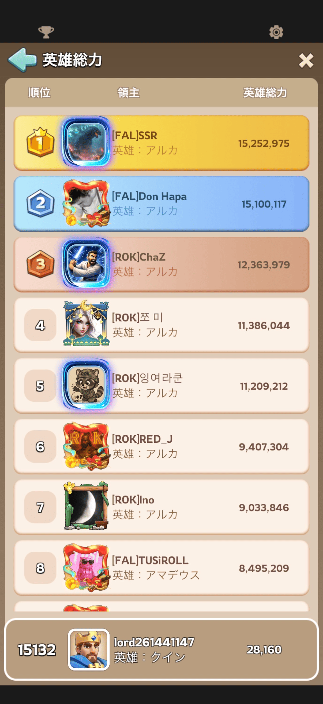
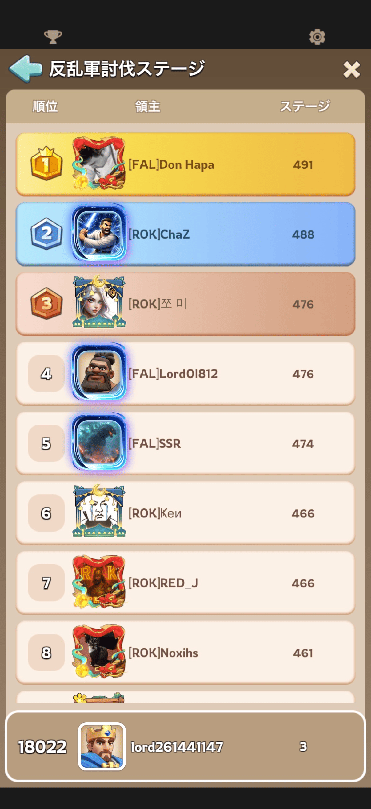
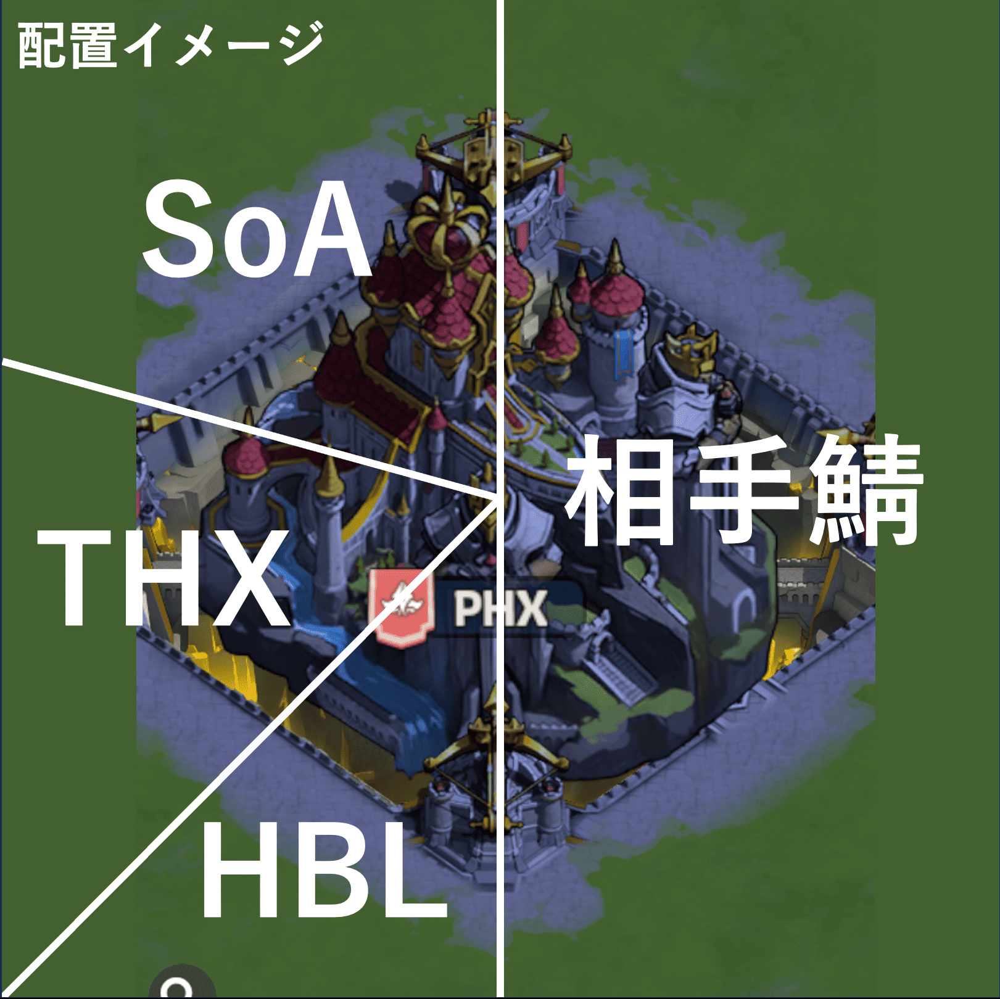

ゴーストに関する全体像を皆さんに共有するために作りました。
ただし、2/28は使わない可能性が高いです🙇
・敵の最高戦力＜493の最高戦力の状態（有利）
・2トップが別同盟なのでゴーストの可能性あり
→戦力差的に援軍さえしっかり入れれば対処可能！
画像


○初手30分：単純防衛
初手ダッシュ→黄金５駐屯
SoA：王城のみ
THX：砲台2個
HBL：砲台2個
○初手30分以降：防衛継続+砲台
SoA：王城+砲台1個
THX：砲台1個
HBL：砲台2個
○敵が想定より強い場合：片側ゴースト
SoA→THXで一名派遣し
SoA集結主1名、ソロ攻撃隊長1名、THX集結主2名体制
【勝利条件】
基本：6時間の王城戦のうち、単純計算でおよそ60回戦闘が発生！
→うち30回防衛 or 拠点奪取で勝利確定！
ゴースト時：30回ゴースト成功で勝利確定！
・全体作戦指示担当：アルス
・集結、援軍指示担当（チャット指示）：アルス、SAMCROさん、VC参加組から数名
・部隊入れ替え、送還担当：各同盟で選出
・時間計測担当：LEO出身から数名
・連絡担当：VC参加組
王城戦時の所属同盟：
SoA：SoA、JPN
HBL：HBL、JYP、SPM
THX：THX、SUN、WA7、ARF
配置：画像参照


*王城集結主はなるべく辺の中央へ
*担当以外の同盟は砲台に攻撃しないこと
*上の砲台（砲台Ⅳ）は初手THX担当→必要に応じてSoAへ担当交代
┗担当交代前後の同士討ちに注意！
主力をソロで王城に送る
→占領できたらそのまま防衛
→できなければ以下の戦略に移行
メリット：王城を奪える集結主が1人でも成立
デメリット：ゴーストの強みである手番の持続がない
→相手がゴーストを被せて流れを奪ってしまう可能性あり
流れ：
同盟A集結
→30秒差で同盟B集結
→A着弾後撤退
→Bが王城占領
→同盟A集結
→Aがソロで王城に送る
→B送還で引き渡し
*VCでタイミングを合わせる
（画像は旧式：2回に1回ゴースト発動↔︎上の動画は毎回発動）

○敵の集結を防衛できた場合
ゴースト解散→ゴースト掛け直し
占領時間+6分確定
○敵が集結を遅らせてきた場合
・優勢時：ステイ
→中立時間が減少
・劣勢時：ソロでの入れ替えで相手の集結誘導を検討
┗Aソロ派遣→B撤退→Bソロ派遣→A撤退→A集結
・王城+取れるだけ砲台をとってひたすら防衛し占領時間を稼ぐ戦略
・最も基本の戦略で体制①③で用いられる。
・敵の集結攻撃をいかに凌ぐかが鍵
【事前準備】
・王城部隊と砲台部隊を分けておく
・攻撃用、防衛用の部隊編成を全員がしておく
【流れ】（遺跡などとほぼ同じ）
①集結攻撃で王城を奪う
②防衛部隊に入れ替え
③相手の連続集結の間に援軍を差し込み続けて防衛！
┗兵種のバランス意識！
④必要に応じて部隊の入れ直し
*乱雑に送らずタイミングを意識して援軍派遣！
*砲台部隊は初手集結→防衛、奪われたら奪えるところを奪いに行く
・二同盟の連携必須！体制②で用いられる！
・王城を占領する同盟Aに対して同盟Bが集結をかけ、敵の少し後に着弾させて王城を奪う戦略
・敵からは同盟Bの集結が見えないためゴースト
・敵に防衛部隊に入れ替える隙を与えない
・最大のメリットは、敵が占領時間を稼げないこと！（効率の数値計算で記載）
*二同盟必要なのは、自分の同盟の駐屯場所に集結をかけることができない仕様だから
【事前準備】
・集結基準時間の決定
┗ex）敵が奪ってから1分後以降の秒数10に合わせるなど
・二同盟の連絡方法の決定
┗敵集結に先行した時のみスタンプなどで、効率化可能
┗先行してしまうと、先に着弾するため狙いが破綻
・敵集結に先行した際の対応も決めておく
┗ex）連絡から+1分後以降の秒数10など
【流れ】
①同盟Aが集結で王城を奪う
②同盟Bがゴースト集結をかける
┗事前に決めた集結基準時間に合わせる
→先行した場合、連絡担当の連絡を受け再度集結
③敵の集結で王城を奪われた直後に、同盟Bの集結が着弾で奪い返す
④同盟Aがゴースト集結をかける
→これを繰り返し徐々に占領時間差を広げる！
・独自戦略！難易度高め！
・ゴースト集結を単一同盟で実現可能に！
【事前準備】
・隊長A、隊長B、隊長Cの決定
┗強さはA>B>C
・集結参加部隊、ソロ攻撃&防衛部隊に分ける！
【流れ】
①隊長Aの集結が着弾、王城を奪う
②時間差で隊長Cがソロ着弾
③すぐに駐屯部隊の隊長をA→Cに変更し、隊長Aは送還
┗集結参加部隊は編成の入れ替えなし！援軍も送らない！
④敵の集結を確認次第、ソロ攻撃＆防衛部隊が一斉にソロ派遣！🚩
┗各々の最強編成！
⑤集結参加部隊は自分の部隊を召還🚩
┗左上から操作！（画像の赤枠）
┗遅れてる人を部隊入れ替え、送還担当が送還
→王城は一瞬未駐屯に！
⑥すぐに隊長Aが集結をかける！
⑦ソロ攻撃＆防衛部隊が着弾！→隊長Bを先頭に変更
⑧ソロ攻撃＆防衛部隊は防衛編成に入れ替え
⑨集結参加部隊は兵が戻り次第集結に乗る
⑩敵の集結で王城を奪われる
→①に戻る
→これを繰り返す！（忙しい😅）
🚩のタイミングは合図があったら一斉に操作をお願いします🙏
【懸念事項】
・複数同盟からの集結、強いプレイヤーのソロ攻撃があると少し弱い
→敵の統率が取れていないほどやりづらい
部隊召還の参考画像

計算式：自分行軍時間-敵行軍時間=兵を送るタイミング(残り集結時間)
*ラグは集結→行軍切り替え時の1秒をそのまま適用
自分の行軍時間を入力して更新してください
*単位はすべて秒
| 敵の行軍時間 | 兵を送るタイミング (集結残り時間) |
|---|